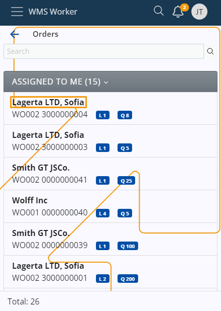
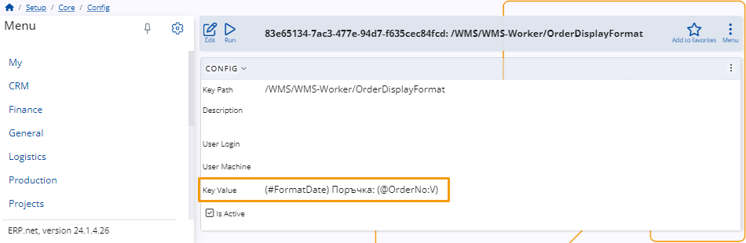

Change order display format
In the WMS Worker, you have the ability to modify the information displayed for the Orders.
This can be achieved using a Configuration Key that presents information through String Interpolation.

Configuration Key
To change the information that is shown in WMS Worker – Orders, you need to use the Configuration Key in Setup – Core – Config.

When you do that, a table with all available configurations will open.
Find the Configuration named /WMS/WMS-Worker/OrderDisplayFormat and open it.

Once you’ve done that you can change the Key Value in the Configuration using String Interpolation. The String Interpolation is taking values from the current Warehouse Order – WarehouseOrder(id).

Based on the Key Value, different information will be shown about the orders.
Behavior in particular cases
Here is the expected behavior in some different cases:
• If there is no Configuration Key set, the information displayed is retrieved from the To Party field. This is the default behavior.
• If there is a Configuration Key set, but the Key value field is blank, the information displayed is also retrieved from To Party field.
• There is a Configuration Key set, but the assigned parameters are not returning any value. The information displayed is going to be “-“.